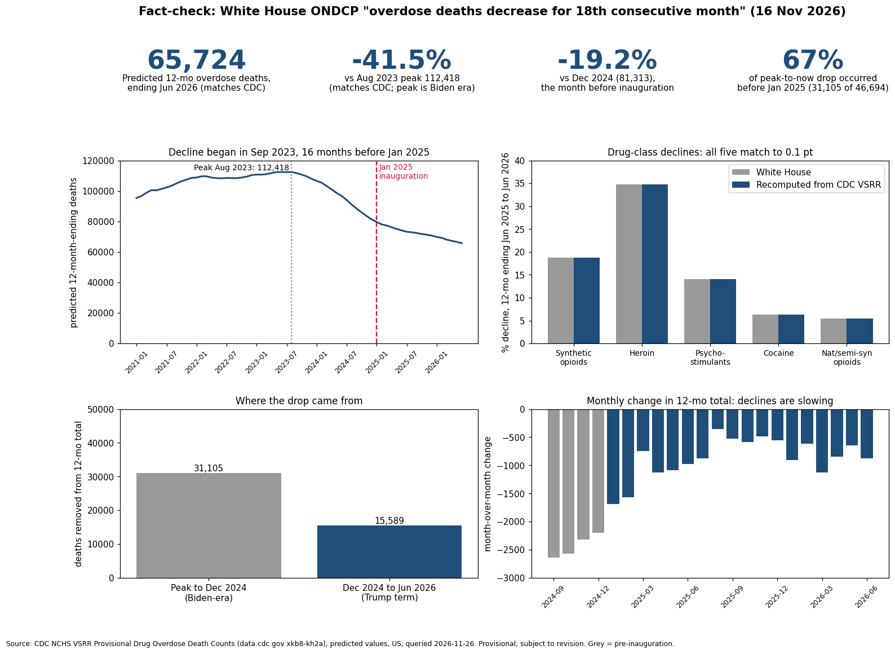

Fact-check: White House "overdose deaths decrease for 18th consecutive month" (ONDCP, 16 Nov 2026)

Every number checks out, but the credit framing earns 2 Pinocchios
All eight quantitative claims reproduce exactly from CDC's provisional data: 65,724 predicted deaths in the 12 months ending June 2026, a 41.5% drop from the 112,418 peak, and the five drug-class declines (18.7, 5.4, 34.8, 14.1, 6.3 percent). The misleading part is the frame: the peak was August 2023 and the 12-month total had already fallen from 112,418 to 81,313 (-27.7%) by December 2024. About 67% of the fall from peak (31,105 of 46,694 deaths) came before January 2025; the Trump-term fall is 81,313 to 65,724 (-19.2%, 15,589 deaths).
- Pinocchio rating: 2 of 4. The facts are right; the implied causation is unsupported and the headline omits that the decline started 16 months earlier.
- The "18th consecutive month" is true for months from Jan 2025 to Jun 2026, but the streak is really 34 consecutive monthly declines (since Sep 2023). 12-month-ending totals also overlap heavily with the prior year, so early 2025 figures mostly describe 2024 deaths.
- The monthly pace of decline is slowing: the 12-month total fell by 2,637 in Sep 2024 against 642 to 1,124 per month in the latest six months.
- Attribution to border security, cartel action and prevention (Carter quote) is opinion; CDC data cannot test it. Competing explanations (fentanyl supply changes, naloxone, treatment, cohort depletion) are not addressed. State-level or cross-country comparisons would be needed and are not done here.
- Figures are provisional "predicted" values (adjusted for reporting lag); reported (unadjusted) June 2026 total is 64,433. Revisable.
- Nothing was left uncheckable, except that "thousands of lives saved each year" is a counterfactual and is not checkable.
Claim table
| Claim | Finding | Verdict |
|---|
| 65,724 predicted deaths, 12 mo ending Jun 2026 | CDC predicted_value 65,724 (reported 64,433) | True |
| Peak under previous administration 112,418 | Aug 2023 predicted 112,418; peak was during Biden term | True |
| About 41.5% decrease (headline 42%) | 65,724/112,418 = -41.54% | True |
| Lowest since December 2016 | Dec 2016 64,557; Jan 2017 66,194; Jun 2026 sits between | True |
| Declined every month since Jan 2025 (18th consecutive) | Jan 2025 to Jun 2026 = 18 monthly declines; run extends to Sep 2023 | True but incomplete |
| Synthetic opioids -18.7% | 41,685 to 33,876 = -18.7% | True |
| Natural/semi-synthetic -5.4% | 7,451 to 7,047 | True |
| Heroin -34.8% | 2,497 to 1,628 | True |
| Psychostimulants -14.1% | 28,078 to 24,111 | True |
| Cocaine -6.3% | 20,262 to 18,994 | True |
| Quote by Director Sara Carter | Appears verbatim in the release; Carter confirmed ONDCP Director 6 Jan 2026 (52-48) | Quote authentic; causal claims are opinion |
| "Thousands of lives saved each year" | Counterfactual | Not checkable |
Confidence: high on figures (direct CDC query, exact match); medium on the rating (judgment).
Sources
- White House release: https://www.whitehouse.gov/releases/2026/11/u-s-drug-overdose-deaths-decrease-for-18th-consecutive-month-under-trump-administration/
- CDC NCHS VSRR Provisional Drug Overdose Death Counts, https://data.cdc.gov/resource/xkb8-kh2a.json (state=US, predicted_value), queried 2026-11-26
- Carter confirmation: https://www.whitehouse.gov/releases/2026/01/sara-carter-confirmed-as-drug-czar and news reports (HSToday, Dallas Express)
Footnote: provisional CDC data; period 12-month-ending Jan 2015 to Jun 2026.